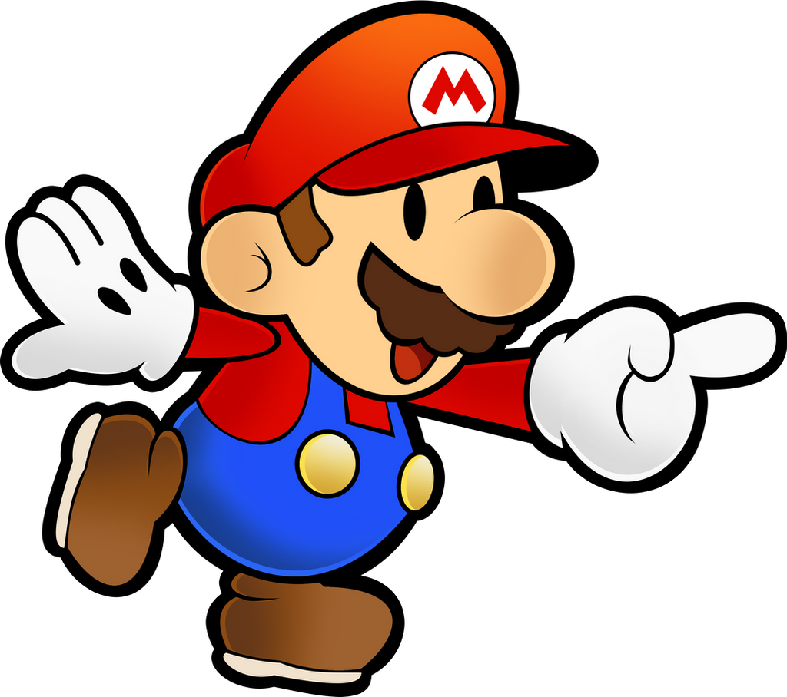

PAPER MARIO É UM MMORPG QUE VOCÊ CRIA SUA PRÓPRIA HISTÓRIA
O reino foi devastado por uma ameaça origami! Junte-se ao Mario e à sua nova companheira, Olivia, enquanto eles lutam contra os malvados soldados de dobraduras Folded Soldiers, consertam a paisagem danificada e tente libertar o castelo da princesa Peach das garras do rei Olly nesta aventura cômica
